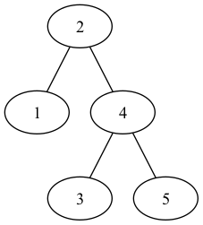

Chapter 12.3
ch12.3
12.3-1
TREE-INSERT(T, z)
x = T.root
if x == NIL
T.root = z
else TREE-INSERT-REC(x, z)
TREE-INSERT-REC(x, z)
if z.key < x.key
if x.left == NIL
x.left = z
else TREE-INSERT-REC(x.left, z)
else if x.right == NIL
x.right = z
else TREE-INSERT-REC(x.right, z)
12.3-2
To search for a value in the tree, we need perform one more test—from the parent to the desired node, than first insertion of the value into the tree.
12.3-3
The worst-case is when the \(n\) numbers are already sorted, the running time will be \(O(n^2)\), the best-case is when the \(n\) numbers make the tree balance, the running time will be \(O(n\lg n)\).
12.3-4
The operation of deletion is not commutative. Below is the example, deletion of \(1\) then \(2\) will generate a different tree than deletion of \(2\) then \(1\).

12.3-5
SEARCH(T, k)
x = T.root
while x != NIL and x.key != k
if x.key > k
x = x.left
else x = x.right
return x
INSERT(T, z)
y = NIL
x = T.root
pre = NIL
while x != NIL
y = x
if z.key < x.key
x = x.left
else pre = x
x = x.right
if pre != NIL
pre.succ = z
if y == NIL
T.root = z
elseif z.key < y.key
y.left = z
z.succ = y
else y.right = z
z.succ = y.succ
PARENT(T, z)
x = T.root
y = NIL
while x != NIL and x.key != z.key
y = x
if z.key < x.key
x = x.left
else x = x.right
return y
PREDECESSOR(T, z)
if z.left != NIL
x = z.left
while x.right != NIL
x = x.right
return x
x = T.root
y = NIL
while x != NIL and x.key != z.key
if z.key < x.key
x = x.left
else y = x
x = x.right
return y
TRANSPLANT(T, u, v)
x = T.root
p = PARENT(T, u)
pre = PREDECESSOR(T, u)
if p == NIL
T.root = v
elseif u == p.left
p.left = v
else p.right = v
if v != NIL
v.succ = u.succ
if pre != NIL and pre != v
pre.succ = v
TREE-DELETE(T, z)
if z.left == NIL
TRANSPLANT(T, z, z.right)
elseif z.right == NIL
TRANSPLANT(T, z, z.left)
else y = z.succ
if y != z.right
TRANSPLANT(T, y, y.right)
y.right = z.right
TRANSPLANT(T, z, y)
y.left = z.left
pre = PREDECESSOR(T, z)
if pre != NIL
pre.succ = y
12.3-6
Below is the modified TREE-DELETE' to choose the predecessor rather than
the successor.
TREE-DELETE'(T, z)
if z.left == NIL
TRANSPLANT(T, z, z.right)
elseif z.right == NIL
TRANSPLANT(T, z, z.left)
else y = TREE-MAXIMUM(z.left)
if y.p != z
TRANSPLANT(T, y, y.left)
y.left = z.left
y.left.p = y
TRANSPLANT(T, z, y)
y.right = z.right
y.right.p = y
We could implement a fair strategy, giving equal priority to predecessor and
successor, by randomly choosing from the original TREE-DELETE procedure and
the modified TREE-DELETE' procedure.